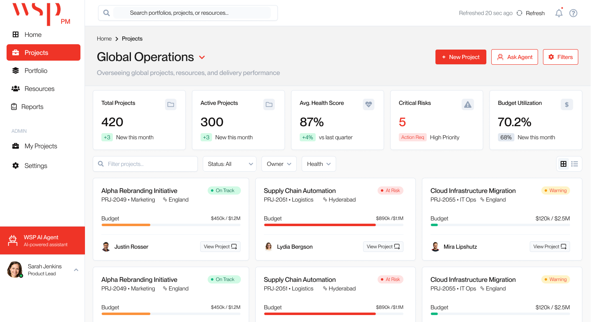

Designed for momentum, not just metrics.”
WSP manages massive infrastructure, engineering, advisory, and ESG programs worldwide—thousands of stakeholders, multi-region delivery, and tight compliance dependencies. But for executives, visibility was a fragmented mess of Excel, legacy PMIS, and email chains.
Create a Single Pane of Glass that delivers confidence, speed, and proactivity at every level—from individual PMs to Global ESG Sponsors.
"We don't need more data. We need momentum."
"I still have to call my PM to understand what's actually happening despite having 150 project views."
The system optimized for completeness. But humans operate on comprehension. This project moved beyond interface improvement into designing software that helps organizations understand themselves.
"From a functional perspective, nothing was missing. From a human perspective, everything was overwhelming."

High-density cards prioritize Existence over Importance. Every metric is screaming for attention simultaneously, leading to immediate executive paralysis.
"Fragmented data isn't just a nuisance—it's a risk. Delayed surfacing of budget drift and resource over-allocation costs millions in missed milestones."
Legacy PMO workflows suffered from Analytical Inertia. While data existed, the manual effort required to synthesize it meant that by the time a report reached an executive, the "truth" was already 10 days old.
PMs spent 16+ hours/week manually exporting data into PowerPoints.
Resource managers had no early warning for talent burnout or skill gaps.
By the time a report reached an exec, the "truth" was already 10 days old.
Data fragmentation led to "Analysis Paralysis" during high-stakes reviews.
Transforming financial services requires moving from paper-heavy processes to high-velocity digital decisioning for every stakeholder.
Digitizing financial services requires a balance between ultra-low application friction and rigorous regulatory governance.
To ensure global consistency across 450+ projects, I built a scalable design language specifically tailored for high-density enterprise data and executive glancing behavior.
A look at the granular logic governing a single primitive. Our status system uses Visual Gravity—scaling intensity and mass based on risk urgency.
Automated token enforcement ensures 4.5:1 ratio across all variants.
Design decisions centered on Action over Information. I developed high-fidelity surfaces that guide the user toward critical interventions using visual hierarchy as a primary tool.
Time to Insight
Daily Adoption
Escalation Speed
Reduced "Wait-and-See" culture by providing real-time health indicators.
Eliminated 2-week reporting cycles with live dashboard availability.
Active daily use across 450+ projects within the first 6 months.
Unified fragmented portfolios into a single global operational view.
I learned that WSP PM isn’t just software—it’s the nervous system for global delivery. By building trust through transparency, we transformed how a global organization understands itself.